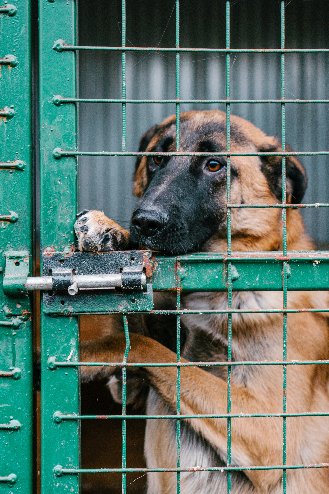

plutosnonprofit@gmail.com

Segítsünk menhelyen élő állatoknak
Tudtad, hogy rengeteg állat él menhelyeken Magyarországon? A Menhelyetető nevű non-profit szervezet célja, hogy segítséget nyújtson ezeknek az állatoknak, és biztonságot és gondoskodást nyújtson nekik. Támogasd te is a Menhelyetetőt, és segítsd az állatokat! Minden adomány és segítség fontos ahhoz, hogy minél több állatnak biztosítani tudjunk megfelelő ellátást és szeretetet. Kattints az "Adományozz most" gombra, és legyél része ennek a nemes ügynek!
Tegyük boldoggá együtt a menhelyen élő állatokat!
Tudtad, hogy sok állat él menhelyeken Magyarországon? A Menhelyetető nevű non-profit szervezet arra törekszik, hogy segítséget nyújtson ezeknek az állatoknak, és boldogságot hozzon az életükbe. Ha szeretnél te is részt venni ebben a nemes küldetésben, csatlakozz a Menhelyetetőhöz! Adományoddal és önkéntes munkáddal segíthetsz abban, hogy minél több menhelyen élő állatnak biztosítani tudjunk szeretetteljes otthont. Kattints az "Adományozz most" gombra, és támogasd velünk az állatvédelem ügyét!

Segítsünk mosolyt varázsolni menhelyen élő állatok arcára!
Tudtad, hogy sok menhelyen élő állat várja szerető otthonát Magyarországon és világszerte? A Menhelyetető nevű non-profit szervezet célja, hogy segítséget nyújtson nekik, és boldogságot hozzon az életükbe. Ha szeretnél te is hozzájárulni ahhoz, hogy több állatnak jusson szeretet és gondoskodás, adományozz a Menhelyetetőnek! Minden adomány számít, és segít abban, hogy a Menhelyetető minél több állatnak tudjon segíteni. Kattints az "Adományozz most" gombra, és támogasd velünk az állatvédelem ügyét!